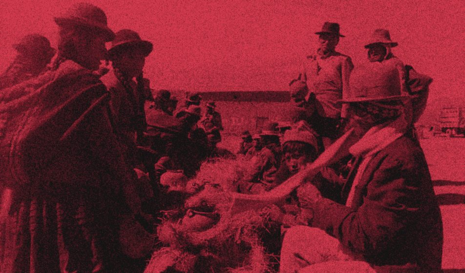
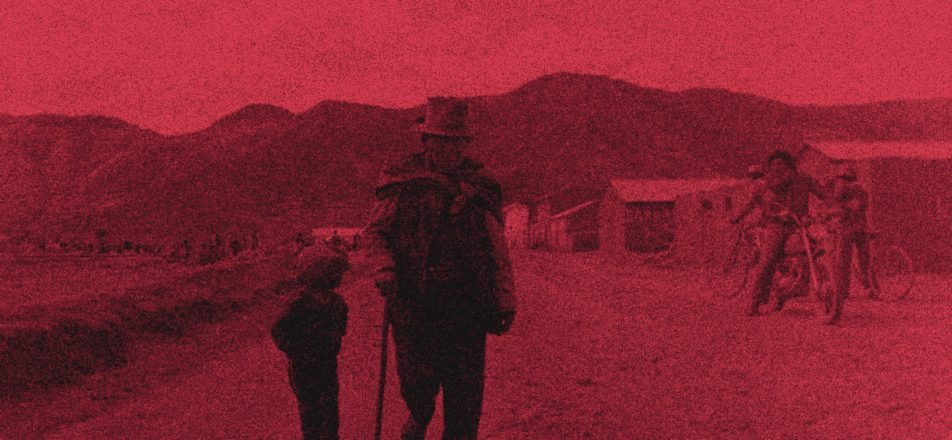
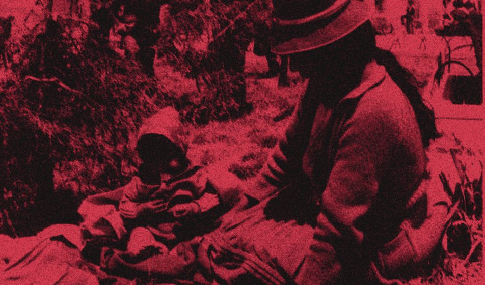
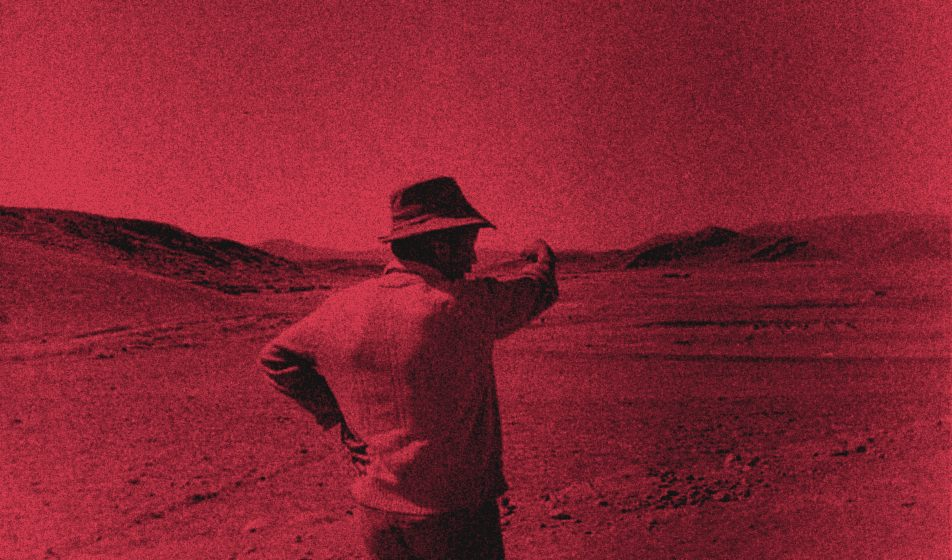
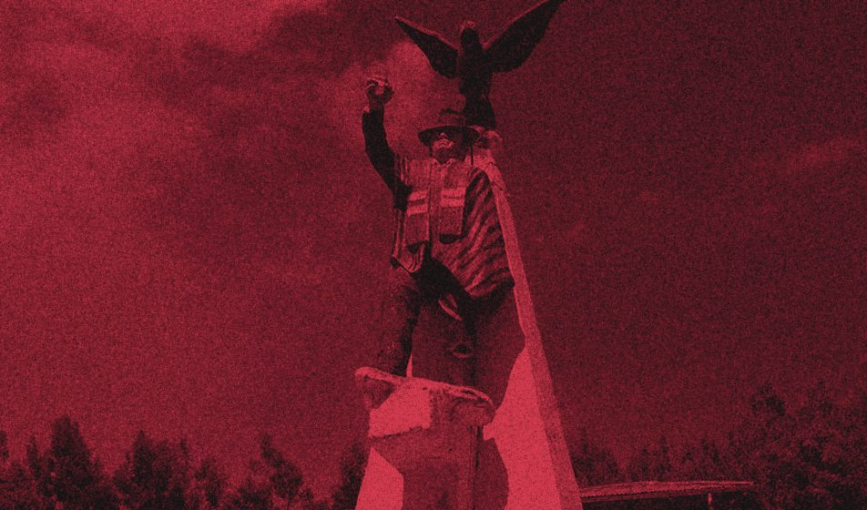
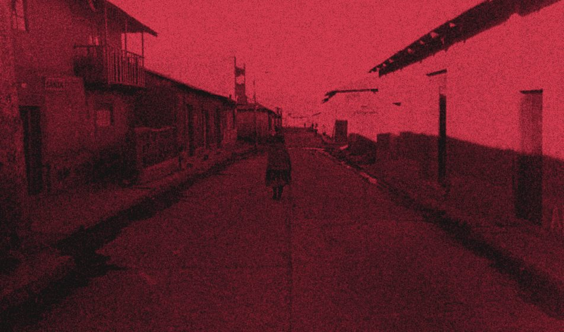

Rita Poma (1900–1924) fue una maestra aymara de Moho, Puno. Fundó una escuela rural que los hacendados destruyeron varias veces y fue dirigente de Wancho Lima, la ciudad que las comunidades aymaras de Huancané y Moho construyeron en 1923. La asesinaron a los 24 años.
Vivió en un Puno donde las haciendas crecían sobre las tierras de las comunidades, donde la mayoría indígena no podía votar y donde los gamonales castigaban a quienes aprendían a leer. Las comunidades respondieron organizándose: enviaron mensajeros a Lima, fundaron escuelas propias, formaron comités y congresos, y se rebelaron.
En las fuentes aparece como Rita Puma Justo y como Rita Poma. Aquí se usa Rita Poma, el nombre con que se la conoce en Puno y el de la organización.
1. La lana y el despojo de las tierras comunales

Entre 1876 y 1915 el número de haciendas en Puno se multiplicó por más de cuatro, de 705 a 3,219, y ese crecimiento se hizo sobre pastos y tierras de las comunidades indígenas1. El motor fue la lana. Desde la década de 1830 el altiplano quedó integrado al comercio internacional de lanas y al capital británico, y el Ferrocarril del Sur conectó Puno con Arequipa2. La lana de oveja y de alpaca salía por los puertos de Islay y Mollendo3. Entre 1895 y 1935 fue el principal rubro de exportación de la región, y en 1927 la lana que salía por Mollendo representaba «casi el noventa por ciento» de la que exportaba el Perú4.
| Año | Número de haciendas |
|---|---|
| 1876 | |
| 1915 |
Fuente: Ruelas Vargas (2019), con datos de Quiroga (1915) y Gallegos (1924).
Según el historiador Nils Jacobsen, que estudió el altiplano entre 1780 y 1930, el comercio de la lana no acabó con el monopolio ni con el clientelaje heredados de la Colonia, y las comunidades mantuvieron su solidaridad comunal5.
Con el alza de los precios de la lana, las haciendas se expandieron a costa de las tierras de comunidades y parcialidades6. Las ventas repetidas y las chacras de la Iglesia permitieron parte de ese crecimiento7. A los comuneros también se les hacía firmar documentos falsos en los que se hacía aparecer que habían recibido «sumas equitativas de dinero» por sus tierras8. Y los gamonales a menudo fabricaban «sublevaciones indígenas» para justificar la intervención de la fuerza pública; después se apropiaban de las tierras y el ganado de los muertos, de los presos y de quienes tuvieron que huir9.
Se llama «gamonalismo» al poder local de los grandes propietarios. Según Bustamante Otero, articulaba a notables locales, autoridades y casas comerciales10; según Ruelas Vargas, los gamonales consolidaron su control político, económico y eclesiástico de la región11. José Carlos Mariátegui, que publicó sus Siete ensayos en 1928, cuatro años después del asesinato de Rita, ubicó la raíz de la cuestión indígena en el ensayo «El problema del indio»: «La cuestión indígena arranca de nuestra economía. Tiene sus raíces en el régimen de propiedad de la tierra». En el mismo ensayo, Mariátegui explicó por qué las leyes protectoras no funcionaban: «El gamonalismo invalida inevitablemente toda ley u ordenanza de protección indígena»12.
En Lima, entre 1895 y 1919, gobernó la llamada República Aristocrática, con un sistema electoral censitario. En 1919 llegó al poder Augusto B. Leguía, cuyo gobierno de once años se conoce como el «Oncenio»13. En esos años el hundimiento de los precios de la lana aumentó las tensiones en Puno14.
2. Trabajo forzado y justicia negada

Además de perder sus tierras, la población indígena estaba «obligada [...] a prestar servicios gratuitos a los gamonales, alcaldes, jueces, al Gobernador y al Cura»15. El pongaje la obligaba a hacer trabajo doméstico gratuito, durante varias semanas al año, en la casa del hacendado16. En Santa Rosa de Juli, las autoridades obligaban a los ayllus «a realizar trabajos gratuitos para construir edificios públicos y casas de los gamonales», y para cada misa los comuneros debían entregar al párroco «un carnero degollado, gallinas, conejos, papas, quinua y huevo»17. Cuando Teodomiro Gutiérrez Cuevas fue subprefecto de Chucuito, en 1903–1904, suprimió el reparto de lanas y los trabajos gratuitos, lo que «significó un golpe demoledor» al gamonalismo18.
El gobierno de Leguía impuso una nueva carga. La Ley de Conscripción Vial (Ley 4113, 1920) obligaba a trabajar sin pago en la construcción de caminos, unas dos semanas al año, y recayó sobre todo en los comuneros indígenas. Según el historiador Mario Meza Bazán, gamonales y autoridades se apoderaron de la ley y la usaron contra las comunidades: el Estado les arrancaba trabajo gratuito mientras les negaba los derechos que reconocía a otros. Estuvo vigente hasta la caída de Leguía en 193019. Su abolición fue una de las demandas de los congresos indígenas de 1922 y 192320.
Para reclamar, las comunidades enviaban «mensajeros» a Lima con memoriales para el presidente. Ya en la década de 1860, tras la rebelión de Huancané, llegaron a Lima emisarios puneños21. Muchos fueron reprimidos. En 1914, Juan Callo Apaza y Manuel Ayamamani fueron apresados al volver de Lima, y muchos delegados que regresaban de la capital terminaron presos o asesinados. Andrés Mayta, que se preparaba para viajar, fue apresado por el subprefecto y, según Ruelas Vargas, decapitado en la cárcel de Juli22. A veces se bloqueaba el camino de los emisarios para que no llegaran; en 1869 un oficial impidió entrar a Palacio a dos indígenas por llevar poncho23.
Entre 1902 y 1920 el gobierno central envió cinco comisiones a investigar la situación de Puno. Tres dejaron informes publicados: Maguiña (1902), Villena (1913) y Roca (1920). El informe que hizo Gutiérrez Cuevas en 1913 «desapareció». La comisión de 1920, enviada por Leguía, recogió más de siete mil reclamos indígenas24, y según Bustamante Otero fue uno de los detonantes de Wancho Lima. Según Tito Melgar, el informe de esa comisión llevaba adjuntos 7,142 memoriales y el original «habría desaparecido en algún archivo oficial»; el informe se publicó en 1935. El Ejecutivo envió sus propuestas de legislación al Parlamento, donde «se pierde el rastro» de ellas25.
3. El voto y la escuela
El reglamento electoral de 1896 limitó la condición de elector y elegible a los varones mayores de 21 años que supieran leer y escribir. Según Peralta, con esa norma el Estado dejó sin voto a la mayoría indígena del país, que no sabía leer ni escribir, durante poco más de ochenta años, hasta la Constitución de 197926. En 1899 la población electoral era de 108,597 personas, el 3.2 % de una población estimada en 3,383,00027. Las mujeres que sabían leer y escribir obtuvieron el voto en 1955, y las personas analfabetas en 1979. Como mujer, Rita no tenía derecho al voto.
| Desde | Quiénes |
|---|---|
| 1896 | Varones mayores de 21 años que sabían leer y escribir |
| 1955 | También las mujeres que sabían leer y escribir |
| 1979 | También las personas analfabetas |
| Personas | |
|---|---|
| Población estimada | |
| Podía votar |
Fuente: Exclusión electoral de analfabetos en Perú y Brasil (s. f.).
Entre 1876 y 1940 el Perú no hizo censos nacionales. El censo de 1940, el más cercano, registró que el 57.6 % de los peruanos mayores de 15 años no sabía leer ni escribir; entre las mujeres la cifra llegaba al 69.3 % y entre los hombres al 45 %28. En Puno, la mayoría de la población era indígena y no sabía leer ni escribir29.
| Mayores de 15 años | Porcentaje |
|---|---|
| Mujeres | |
| Total | |
| Hombres |
Fuente: INEI, censo de 1940.
Según Ruelas Vargas, la ley de educación de 1905 (Ley 162) limitaba a los indígenas a dos años de escuela elemental, frente a cinco para los niños que la ley llamaba «blancos o criollos»30. Las comunidades aportaban terreno, local y mobiliario, pero «sus peticiones resultaron infructuosas por interposición de los gamonales»31.
Según González Watson, la Constitución de 1920 fue la primera que visibilizó a los pueblos indígenas en la legislación peruana. Su artículo 58 prometía proteger a los pueblos indígenas y dictar leyes especiales para ellos, y reconocía la existencia legal de las comunidades. El artículo 41 declaró que los bienes de las comunidades «son imprescriptibles y solo podrán transferirse mediante título público»32. En 1922 el gobierno creó un patronato para asuntos indígenas, presidido por un cura, que el Comité Tahuantinsuyo miró con desconfianza33. Tres años después de esa Constitución, el Ejército arrasó Wancho Lima.
4. Escuela y tierra

Según Ruelas Vargas, el engaño en las ventas de tierras llevó a los comuneros a concluir que debían saber leer y escribir34. A los comuneros se les persuadía a vender sus tierras con documentos fraguados, en los que «se hacía aparecer que recibían sumas equitativas de dinero», y un habitante de Chucuito denunciaba que sufrían «compras engañosas solo por no saber leer y escribir»35. Según Rengifo, las comunidades buscaban leer, escribir y hacer cálculos para negociar directamente en el mercado, dirigirse por sí mismas a las autoridades del Estado y «proveerse de instrumentos para ejercer las libertades civiles»36. Según Mariano Larico, dirigente de Wancho Lima, en sus escuelas se enseñaba a «aprender castellano para defenderse», y Carlos Condorena dijo sobre los maestros adventistas: «nos enseñarán a leer y escribir, eso basta»37. Wancho Lima se propuso crear escuelas en Huancané y Moho para que los comuneros pudieran presentar sus reclamos por escrito38.
Los gamonales bloqueaban o destruían esas escuelas39. Según Vilca Apaza y otros, «pregonaban la frase "Indio leído, Indio perdido"»40. Si un maestro persistía en enseñar en una comunidad, intentaban disuadirlo y, si no lo lograban, «incendiaban y arrasaban la escuela»41. La primera escuela de Manuel Zúñiga Camacho, en Utawilaya, fue clausurada después de 1902 con la acusación de «incitar a la rebelión indígena»; en 1903 Camacho fue procesado tras un levantamiento en Pomata y pasó dos años preso, y en 1913 el obispo Valentín Ampuero organizó en Platería un ataque que destruyó las nuevas instalaciones de su escuela e hizo detenerlo42. En 1923, en Choquechambi (Azángaro), los comuneros que abrieron una escuela fueron «cruelmente azotados y encarcelados» y obligados a firmar que no volverían a educarse ni construir escuelas43. En 1924, según el obispo Cossío, los terratenientes incendiaron más de sesenta locales escolares en Huancané44.
| Año | Lugar | Qué pasó |
|---|---|---|
| Después de 1902 | Utawilaya | La primera escuela de Manuel Zúñiga Camacho fue clausurada con la acusación de «incitar a la rebelión indígena». |
| 1903 | Pomata | Camacho fue procesado tras un levantamiento y pasó dos años preso. |
| 1913 | Platería | El obispo Valentín Ampuero organizó un ataque que destruyó las nuevas instalaciones de la escuela de Camacho e hizo detenerlo. |
| 1923 | Choquechambi (Azángaro) | Los comuneros que abrieron una escuela fueron «cruelmente azotados y encarcelados» y obligados a firmar que no volverían a educarse ni construir escuelas. |
| 1924 | Huancané | Según el obispo Cossío, los terratenientes incendiaron más de sesenta locales escolares. |
Fuentes: Ruelas Vargas (2016, 2019); Arroyo (2005).
Camacho, maestro indígena nacido en 1871 en Cutimbo (Chucuito), había vuelto a Puno en 1898 tras estudiar en escuelas protestantes. Desde ese año enseñó a adultos de forma clandestina y en 1902 fundó la escuela de Utawilaya, en casa de su padrastro, donde se enseñaba lectura y escritura en castellano, estudio de la Biblia, atención a enfermos y orientación agrícola. Tras su cierre, la reabrió con apoyo de la Asociación Pro-Indígena y de la Misión Adventista45. Hacia 1916 la red de Platería-Utawilaya sumaba 19 escuelas y 2,200 alumnos, y llegó después a 3,619 alumnos y 73 maestros indígenas46. En la ciudad de Puno, José Antonio Encinas construyó un «laboratorio pedagógico» laico, orientado a valores ciudadanos, en una escuela que reconocía al niño indígena como sujeto de derechos; según Caldas Figuerola, se nutrió de la escuela adventista, el indigenismo temprano y la Escuela Nueva47.
La educación indígena también fue motivo de debate. Dentro de la Asociación Pro-Indígena, Joaquín Capelo propuso en 1914 una «educación indígena» que enseñara a pensar, y Dora Mayer criticó en 1915 lo que llamó la «manía educacionista»48. En 1928, Mariátegui discutió la idea de que la cuestión indígena pudiera resolverse con la escuela, y escribió que «la más eficiente y grandiosa enseñanza normal no podría operar estos milagros» y que «la escuela y el maestro están irremisiblemente condenados a desnaturalizarse bajo la presión del ambiente feudal»49.
5. Organizaciones y rebeliones

Las comunidades agotaron las vías legales y endurecieron su protesta50. En Puno hubo más de cuarenta rebeliones campesinas durante el siglo XX51, y entre 1909 y 1927 surgieron organizaciones que llevaron los reclamos indígenas a escala nacional52.
| Años | Qué | Quiénes |
|---|---|---|
| 1866–1868 | Rebelión de Juan Bustamante en Huancané | Juan Bustamante, «Mundo puricuy» |
| 1909–1916 | Asociación Pro-Indígena | Pedro S. Zulen, Joaquín Capelo, Dora Mayer |
| 1915–1916 | Levantamiento de Rumi Maqui en Azángaro | Teodomiro Gutiérrez Cuevas, José María Turpo |
| 1915–1920 | Movimiento descentralista federalista del sur | Impulsado por la prédica de Pedro Zulen |
| 1919–1927 | Comité Central Pro-Derecho Indígena Tahuantinsuyo | Samuel Núñez Calderón, Hipólito Salazar, Juan Hipólito Pévez, Carlos Condorena, Ezequiel Urviola |
| 1921–1926 | Seis congresos indígenas | Comité Tahuantinsuyo |
| 1923 | Wancho Lima | Carlos Condorena, Rita Poma y otros dirigentes |
Fuentes: Bustamante Otero (2023); Jacobsen y Domínguez (2011); Lazarte Oyague (2022); Walker (s. f.); Arroyo (2005).
Medio siglo antes de Wancho Lima, entre 1866 y 1868, la rebelión de Juan Bustamante en Huancané terminó con centenares de muertos. Bustamante, conocido como «Mundo puricuy», fue decapitado53. Wancho Lima proyectó después una calle con su nombre54.
La Asociación Pro-Indígena (1909–1916) fue fundada en Lima por Pedro S. Zulen y Joaquín Capelo. Tuvo delegados en provincias, cuyas denuncias de abusos publicaba su boletín, El Deber Pro-Indígena, dirigido por Dora Mayer, que entre 1912 y 1917 publicó 51 números. Sus temas fueron la defensa de las tierras comunales («La cuestión tierras», 1913), la servidumbre, que Capelo describió como «la más cruel tiranía, de la más negra explotación», y la crítica al gamonalismo. Mayer dedicó artículos a «La situación en Puno» (1916) y a «La historia de las sublevaciones indígenas en Puno» (1917)55. La Asociación también apoyó la reapertura de la escuela de Utawilaya56. Entre 1915 y 1920, la prédica de Pedro Zulen impulsó también el movimiento descentralista federalista del sur.
Teodomiro Gutiérrez Cuevas era sargento mayor de caballería, había sido secretario del general Cáceres y subprefecto de Chucuito, donde abolió los trabajos gratuitos, y en 1913 integró una comisión de investigación en Puno. En diciembre de 1915, bajo el nombre de Rumi Maqui («mano de piedra»), encabezó junto a líderes como José María Turpo el levantamiento contra haciendas de Azángaro. Según documentos de los rebeldes, buscaba un Estado Federal del Tahuantinsuyo que uniera Apurímac, Cusco, Puno y Madre de Dios y acabara con el gamonalismo. Fue capturado en Arequipa en abril de 1916, juzgado y encarcelado; luego escapó y se perdió su rastro57. Hoy la Federación Agraria Departamental de Puno lleva su nombre58.
El Comité Central Pro-Derecho Indígena Tahuantinsuyo se fundó en Lima en 1919 y el gobierno lo reconoció el 21 de junio de 1920. Lo formaron dirigentes indígenas, antiguos delegados de la Pro-Indígena, migrantes provincianos y obreros anarcosindicalistas, y lo apoyaron Dora Mayer, Pedro Zulen, José Antonio Encinas e Hildebrando Castro Pozo. Entre sus dirigentes estuvieron Samuel Núñez Calderón, Hipólito Salazar, Juan Hipólito Pévez, Carlos Condorena y Ezequiel Urviola. El subcomité de Puno fue el más activo del país; lo integraban Julián Nina (Paratía), Jorge Ticona (Macusani), Francisco Flores (Acora), Ezequiel Urviola (Muñani), Carlos Condorena (Huancané) y Eduardo Quispe Quispe (Santiago de Pupuja)59.
El Comité organizó seis congresos indígenas entre 1921 y 1926; el primero y el cuarto se realizaron en Lima. Al primero, en agosto de 1921, llegaron más de 400 delegados de 13 departamentos. Exigieron «el respeto de su integridad territorial de todas las comunidades del país», la devolución de las tierras usurpadas por gamonales y la prohibición de vender tierras de comunidades y cofradías. Pidieron abolir la conscripción vial (congresos de 1922 y 1923), el pongaje y todo servicio gratuito, reglamentar y luego abolir el yanaconazgo, y un salario mínimo, y criticaron el enganche. En 1923 reclamaron un tribunal arbitral de revisión de títulos y un tribunal permanente de justicia indígena, la supresión de los tributos eclesiásticos y la reforma del artículo 53 de la Constitución. Denunciaron los abusos de autoridades y hacendados y reclamaron autoridades locales distintas. El Comité impulsó además escuelas en el interior del país, a menudo con maestros indígenas o adventistas60.
| Tema | Qué pedían |
|---|---|
| Tierra | «El respeto de su integridad territorial de todas las comunidades del país», la devolución de las tierras usurpadas por gamonales y la prohibición de vender tierras de comunidades y cofradías. |
| Trabajo | Abolir la conscripción vial (congresos de 1922 y 1923), el pongaje y todo servicio gratuito; reglamentar y luego abolir el yanaconazgo; un salario mínimo. Criticaron el enganche. |
| Justicia | Un tribunal arbitral de revisión de títulos y un tribunal permanente de justicia indígena (1923). |
| Iglesia | La supresión de los tributos eclesiásticos y la reforma del artículo 53 de la Constitución (1923). |
| Autoridades | Denunciaron los abusos de autoridades y hacendados y reclamaron autoridades locales distintas. |
| Escuelas | El Comité impulsó escuelas en el interior del país, a menudo con maestros indígenas o adventistas. |
Fuente: Arroyo (2005).
Al principio Leguía apoyó al Comité: pagó pasajes y almuerzos de los delegados del primer congreso. Desde 1923 el Comité se distanció; según Arroyo, Leguía se apoyó en la burguesía industrial y cedió ante los gamonales, y Urviola renunció a la Secretaría General en el tercer congreso. Según Arroyo, Leguía dijo a Condorena «yo apoyo al indio, quiero la revolución del indio», pero condenó como «actos de vandalismo» lo ocurrido en Huancané61.
Desde 1921 los gamonales atacaron al Comité, acusando a sus miembros de «ramonales» por las colectas (la «rama») que hacían en las comunidades. En 1924 la policía hostigó el cuarto congreso y Salazar fue deportado. Urviola murió el 27 de enero de 1925 en el Hospital Dos de Mayo, tras ser perseguido. En agosto de 1927 una resolución suprema prohibió el Comité en todo el país62.
6. Wancho Lima

En 1923 las comunidades aymaras de Huancané y Moho fundaron su propia ciudad, Wancho Lima, como un centro político libre de la influencia de las autoridades y los «mistis» de Huancané63. Según Sejje Mamani, la ciudad se fundó el 1 de junio de 1923 y contó al inicio con la «anuencia fáctica» de Leguía64. Para Bustamante Otero, la detonaron cuatro hechos: la comisión de 1920 y sus más de siete mil reclamos, la organización del Comité Tahuantinsuyo, la ineficacia de la justicia y un supuesto acuerdo con Leguía para crear escuelas autónomas y una nueva capital provincial. No fue una insurrección contra el latifundio en general, sino contra el sistema de explotación de los «notables» y mistis del distrito65.
La ciudad se planeó con los planos urbanos de Lima, y se construyeron locales para ministerios, escuelas, mercados, calles y avenidas66. Sus objetivos eran crear escuelas clandestinas en las parcialidades de Huancané y Moho, para que los comuneros pudieran leer, escribir y presentar reclamos por escrito; organizar subcomités y ayllus en la provincia; tener ferias semanales propias y dejar de abastecer la feria de Huancané; y enviar comisionados a entrevistarse con el presidente Leguía67. Las calles iban a llevar los nombres de Túpac Amaru, Juan Bustamante y Rumi Maqui. Mariano Larico la describió como «una República dentro de la otra República»68. Las fuentes la llaman República Tahuantinsuyana69 o República Aymara Tahuantinsuyana70.
Su líder principal fue Carlos Condorena Yujra, mensajero de las comunidades y miembro del subcomité puneño del Comité Tahuantinsuyo, elegido presidente provisional. Entre los dirigentes estuvieron también Rita Poma, Mariano Larico Yujra, cuyo testimonio recogió José Luis Ayala en Yo fui canillita de José Carlos Mariátegui (1990), y Antonio Francisco Luque Luque, presidente del Subcomité Distrital Pro-Derecho Indígena. Sejje Mamani señala como principal líder a Mariano Luque Corimayhua71.
El 13 de diciembre de 1923 llegó a Vilquechico el mayor Luis Vinatea con 50 soldados del Batallón de Infantería N.º 15 de Puno y dos ametralladoras; se sumaron 25 hombres desde Azángaro y milicias de Huancané72. Ochoa habla de 400 soldados73. El 16 de diciembre las tropas tomaron la ciudad, fusilaron a hombres y mujeres e incendiaron las construcciones74. Evaristo Corimayhua Carcasi fue el primer fusilado, a la puerta de la capilla, tras enfrentar al jefe militar. Cecilia Luque fue fusilada el 16 de diciembre de 1923. Mariano Luque Corimayhua fue capturado, azotado y fusilado la noche de Navidad cerca del río Huancané, y su cuerpo nunca se recuperó. Mariano Mercedes Pacco Mamani sobrevivió a su fusilamiento, el 10 de enero de 1924, lanzándose al río75.
| Nombre | Qué dicen las fuentes |
|---|---|
| Carlos Condorena Yujra | Líder principal, mensajero de las comunidades y miembro del subcomité puneño del Comité Tahuantinsuyo. Fue elegido presidente provisional. |
| Rita Poma | Dirigente y maestra de Moho (capítulo 7). |
| Mariano Larico Yujra | Dirigente. José Luis Ayala recogió su testimonio en Yo fui canillita de José Carlos Mariátegui (1990). |
| Antonio Francisco Luque Luque | Presidente del Subcomité Distrital Pro-Derecho Indígena. |
| Mariano Luque Corimayhua | Sejje Mamani lo señala como principal líder. Fue capturado, azotado y fusilado la noche de Navidad cerca del río Huancané; su cuerpo nunca se recuperó. |
| Evaristo Corimayhua Carcasi | El primer fusilado, a la puerta de la capilla, tras enfrentar al jefe militar. |
| Cecilia Luque | Fusilada el 16 de diciembre de 1923. |
| Mariano Mercedes Pacco Mamani | Sobrevivió a su fusilamiento, el 10 de enero de 1924, lanzándose al río. |
Fuentes: Sejje Mamani (2023); Ochoa (2023); Chuquipiunta Machaca (2025b); Arroyo (2005); Bustamante Otero (2023).
No hay cifra oficial de muertos: unos estudiosos hablan de no más de 200 y otros de más de 2,00076. El sargento Tomás Valdivia Delgado dijo que «con los indios hicieron leña»77. Según Condorena, después los mistis arrearon a la plaza de Huancané más de 8,000 ovejas, 3,000 vacas y cientos de caballos de las comunidades78.
7. Rita Poma

Ninguno de los estudios académicos revisados trata a Rita Poma en detalle: lo que se sabe de su vida viene de historiadores y docentes de Moho, de la prensa y de la memoria de su pueblo.
Nació el 2 de enero de 1900 en San Luis de Charajiri, parcialidad de Alto Huaraya (Korwari Apacheta), distrito de Moho. Fue hija de José María Puma y Rufina Justo, y la menor de cinco hermanos: Rufino, María, Andrea, Manuela y Rita79. Según El Objetivo, sus padres eran campesinos comerciantes80.
Se movilizaba a caballo y participó en varias iniciativas a favor de la educación campesina. Apoyó la creación de las primeras escuelas del distrito de Moho81 y fundó y dirigió la escuela rural de Chuño Huyo, la primera escuela rural de Moho82. Los hacendados destruyeron la escuela varias veces83; según Chuquipiunta Machaca84 y Alvites85, ella la reconstruyó cada vez. También se la menciona como primera maestra de aula en el «Jardín del Altiplano»86. Se la considera la primera maestra campesina del siglo XX en Puno87.
En 1923, con 23 años, participó en Wancho Lima junto a Carlos Condorena, Mariano Pacco, Evaristo Corimayhua y Antonio Francisco Luque. Viajaba a caballo para organizar reuniones y capacitaciones88.
Después de la masacre, los mistis ordenaron su captura, incendiaron su casa, saquearon sus bienes y mataron a familiares suyos. Vivió perseguida entre Alto Huaraya, Jipata y Wancho Lima89. Fue capturada el 9 de enero de 1924. Las fuentes coinciden en que fue torturada y asesinada, pero no en cómo: unas dicen que fue envenenada en el puesto de la guardia urbana90; otras, que fue arrastrada por su caballo, azotada y ahorcada en un eucalipto del cementerio de Moho, donde su cuerpo quedó expuesto como advertencia91; Sejje Mamani92 indica que fue ahorcada en la Plaza de Armas de Moho. Tampoco coinciden en quiénes la mataron: hacendados de Moho93, soldados94 o el Estado mediante agentes civiles y armados95.
En 2022 el Gobierno Regional de Puno la declaró heroína mártir aymara y personaje ilustre de Moho96. Un colegio de Moho lleva su nombre. José Luis Ayala le dedicó el poemario Celebración cósmica de Rita Puma (2005), y Renata Flores la canción «Rita Puma Justo», del álbum Isqun, mitad en aymara y mitad en castellano. En la novela Atusparia, de Gabriela Wiener, un grupo feminista antirracista anticapitalista lleva su nombre, y Héctor Béjar narra su historia en Historia del Perú para descontentos97.
8. Puntos en que las fuentes difieren
Además de las versiones sobre su asesinato, las fuentes difieren en otros datos. Chuquipiunta Machaca98 afirma que Rita ayudó a conducir la escuela de Aña Aña (1910–1921); otra versión, no verificada en este documento, la atribuye a Mariano Luque. Sejje Mamani99 fecha la fundación de Wancho Lima el 1 de junio de 1923; otras fuentes dicen solo «1923». Sobre las tropas, Sejje Mamani100 habla de 50 soldados, dos ametralladoras, 25 hombres más y milicias, y Ochoa101 de 400 soldados. Sobre los muertos, las estimaciones van de «no más de 200» a «más de 2,000», sin cifra oficial102. Su nombre aparece como Rita Puma Justo en la mayoría de textos y como Rita Poma en el uso de Puno103.
| Tema | Versiones |
|---|---|
| Cómo la mataron |
|
| Quién la mató |
|
| Escuela de Aña Aña (1910–1921) |
|
| Fundación de Wancho Lima |
|
| Tropas |
|
| Muertos |
|
| Su nombre |
|
Las fuentes coinciden en que nació en Moho en 1900, fue maestra, fundó la escuela de Chuño Huyo, que los hacendados destruyeron, fue dirigente de Wancho Lima y fue capturada y asesinada el 9 de enero de 1924.
Notas
- 1.Ruelas Vargas, 2019, con datos de Quiroga, 1915, y Gallegos, 1924.
- 2.Bustamante Otero, 2023.
- 3.Jacobsen, 1993, según la reseña de Hampe Martínez.
- 4.Ruelas Vargas, 2019.
- 5.Jacobsen, 1993, según la reseña de Hampe Martínez.
- 6.Bustamante Otero, 2023.
- 7.Jacobsen, 1993, según la reseña de Hampe Martínez.
- 8.Ruelas Vargas, 2016.
- 9.Ruelas Vargas, 2019.
- 10.Bustamante Otero, 2023.
- 11.Ruelas Vargas, 2019.
- 12.Mariátegui, 1928.
- 13.Arroyo, 2005.
- 14.Bustamante Otero, 2023.
- 15.Ruelas Vargas, 2016.
- 16.Ruelas Vargas, 2019.
- 17.Ruelas Vargas, 2016.
- 18.Ruelas Vargas, 2019.
- 19.Meza Bazán, 2003.
- 20.Arroyo, 2005.
- 21.Ragas, 2014.
- 22.Ruelas Vargas, 2019.
- 23.Ragas, 2014.
- 24.Bustamante Otero, 2023.
- 25.Tito Melgar, 2025.
- 26.Peralta, s. f.
- 27.Exclusión electoral de analfabetos en Perú y Brasil, s. f.
- 28.INEI.
- 29.Ruelas Vargas, 2019.
- 30.Ruelas Vargas, 2019.
- 31.Ruelas Vargas, 2016.
- 32.González Watson, 2020.
- 33.Arroyo, 2005.
- 34.Ruelas Vargas, 2016.
- 35.Ruelas Vargas, 2016.
- 36.Rengifo, 1990, citado en Ruelas Vargas, 2016.
- 37.Arroyo, 2005.
- 38.Sejje Mamani, 2023.
- 39.Ruelas Vargas, 2016.
- 40.Vilca Apaza et al., 2018.
- 41.Ruelas Vargas, 2016.
- 42.Ruelas Vargas, 2016.
- 43.Ruelas Vargas, 2019.
- 44.Arroyo, 2005.
- 45.Ruelas Vargas, 2016.
- 46.Ruelas Vargas, 2019.
- 47.Caldas Figuerola, 2021.
- 48.Lazarte Oyague, 2022.
- 49.Mariátegui, 1928.
- 50.Bustamante Otero, 2023.
- 51.Ruelas Vargas, 2019.
- 52.Bustamante Otero, 2023; Arroyo, 2005.
- 53.Bustamante Otero, 2023; Jacobsen y Domínguez, 2011.
- 54.Bustamante Otero, 2023.
- 55.Lazarte Oyague, 2022.
- 56.Ruelas Vargas, 2016.
- 57.Bustamante Otero, 2023; Walker, s. f.
- 58.Bustamante Otero, 2023.
- 59.Arroyo, 2005.
- 60.Arroyo, 2005.
- 61.Arroyo, 2005.
- 62.Arroyo, 2005.
- 63.Bustamante Otero, 2023; Sejje Mamani, 2023.
- 64.Sejje Mamani, 2023.
- 65.Bustamante Otero, 2023.
- 66.Ochoa, 2023.
- 67.Sejje Mamani, 2023.
- 68.Bustamante Otero, 2023.
- 69.Sejje Mamani, 2023.
- 70.Ochoa, 2023; Chuquipiunta Machaca, 2025b.
- 71.Sejje Mamani, 2023; Ochoa, 2023; Chuquipiunta Machaca, 2025b; Arroyo, 2005; Bustamante Otero, 2023.
- 72.Sejje Mamani, 2023.
- 73.Ochoa, 2023.
- 74.Chuquipiunta Machaca, 2025b.
- 75.Sejje Mamani, 2023; Ochoa, 2023; Chuquipiunta Machaca, 2025b.
- 76.Sejje Mamani, 2023.
- 77.Ramos Zambrano, 1984, citado en Sejje Mamani, 2023.
- 78.Sejje Mamani, 2023.
- 79.Chuquipiunta Machaca, s. f.; Wikipedia.
- 80.El Objetivo, 2026.
- 81.Chuquipiunta Machaca, s. f.
- 82.Wikipedia; Chuquipiunta Machaca, 2025a.
- 83.Chuquipiunta Machaca, s. f.; 2025a.
- 84.Chuquipiunta Machaca, 2025a.
- 85.Alvites, s. f.
- 86.Chuquipiunta Machaca, s. f.
- 87.Chuquipiunta Machaca, 2025a.
- 88.Chuquipiunta Machaca, 2025a; s. f.; Ochoa, 2023.
- 89.Chuquipiunta Machaca, s. f.
- 90.Chuquipiunta Machaca, 2025a; Alvites, s. f.
- 91.Chuquipiunta Machaca, s. f.; El Objetivo, 2026; Wikipedia.
- 92.Sejje Mamani, 2023.
- 93.Sejje Mamani, 2023.
- 94.Alvites, s. f.
- 95.El Objetivo, 2026.
- 96.Acuerdo Regional N.º 325-2022-GRP-CRP.
- 97.Wikipedia; Chuquipiunta Machaca, 2025a; Alvites, s. f.
- 98.Chuquipiunta Machaca, 2025a.
- 99.Sejje Mamani, 2023.
- 100.Sejje Mamani, 2023.
- 101.Ochoa, 2023.
- 102.Sejje Mamani, 2023.
- 103.Sejje Mamani, 2023.
Bibliografía
Fuentes consultadas
- Alvites, L. (s. f.). Rita Poma [video]. TikTok. Revisado a partir de sus subtítulos.
- Arroyo Cetal, C. (2005). La experiencia del Comité Central Pro-Derecho Indígena Tahuantinsuyo. Estudios Interdisciplinarios de América Latina y el Caribe, 15(1). Universidad de Tel Aviv.
- Bustamante Otero, L. (2023). Anticentralismo y memoria. El caso de las rebeliones de Rumi Maqui y Wancho Lima (Puno). En Líneas Generales, 9, 8–18. Universidad de Lima.
- Caldas Figuerola, I. (2021). Puno y Encinas, entre la rebelión campesina y la educación (1895–1910). Investigaciones Sociales, 44, 341–351. UNMSM. (Consultado el resumen.)
- Chuquipiunta Machaca, F. (2025a, 28 de diciembre). Rita Puma, mártir de la nación aimara. El Peruano (opinión).
- Chuquipiunta Machaca, F. (2025b, 14 de diciembre). Huancho Lima en la memoria. El Peruano (opinión).
- Chuquipiunta Machaca, F. (2025c, 12 de diciembre). Moho, tierra de resiliencia, valentía y compromiso. El Peruano (opinión).
- Chuquipiunta Machaca, F. (s. f.). Rita Puma, mártir de la educación puneña. Andares.
- El Objetivo. (2026, 4 de febrero). Rita Poma: la heroína aymara que fue silenciada por enseñar a leer.
- Exclusión electoral de analfabetos en Perú y Brasil. (s. f.). La exclusión electoral de analfabetos en el siglo XX y los clivajes de etnicidad/raza y territorio en América Latina. Academia.edu.
- Gobierno Regional de Puno. (2022). Acuerdo Regional N.º 325-2022-GRP-CRP. (No se pudo abrir el texto; citado por Wikipedia y El Objetivo.)
- González Watson, A. M. (2020). El ejercicio del derecho a la personería jurídica y propiedad colectiva de la tierra de los pueblos indígenas en el Perú. Vox Juris, 38(1), 109–128.
- Hampe Martínez, T. (s. f.). Reseña de Mirages of Transition: The Peruvian Altiplano, 1780–1930, de Nils Jacobsen. Histórica. PUCP.
- INEI. (s. f.). Perú: tasa de analfabetismo de la población de 15 años y más, según área y sexo, 1940–1993.
- Lazarte Oyague, S. E. (2022). El caso de El Deber Pro-Indígena (Lima, 1912–1917). Revista del Archivo General de la Nación, 37, 209–221.
- Mariátegui, J. C. (1928). El problema del indio. En Siete ensayos de interpretación de la realidad peruana. Amauta.
- Meza Bazán, M. (2003). Los caminos de la modernidad. La Ley de Conscripción Vial. Énfasis, 1, 42–49. Basado en su tesis de licenciatura en Historia (UNMSM, 1999).
- Ochoa, R. (2023, 29 de enero). La rebelión de los Wancho-Lima. La República.
- Peralta. (s. f.). Artículo sobre el reglamento electoral de 1896 y la exclusión indígena. Argumentos. IEP.
- Ragas, J. (2014). Indios en Palacio. Emisarios indígenas, gobierno central y espacios de negociación en Perú (1860–1940). Argumentos, 8(2). IEP.
- Ruelas Vargas, D. (2016). La escuela rural de Utawilaya: una educación liberadora desde Puno, Perú 1902. Revista Historia de la Educación Latinoamericana, 18(27), 243–262.
- Ruelas Vargas, D. (2019). Los movimientos indígenas y la educación del siglo XX en el sur andino puneño peruano. Revista Historia de la Educación Latinoamericana.
- Sejje Mamani, L. (2023, 30 de junio). A 100 años de la masacre indígena, Huancho Lima sigue esperando justicia. Servindi.
- Tito Melgar, J. L. (2025, 27 de enero). La Comisión Especial Pro-Indígena de 1920: los intentos a favor de una legislación indigenista a principios del Oncenio. Pacarina del Sur, 16(52-53).
- Vilca Apaza, H. M., Yapuchura Saico, C. R., Mamani Apaza, W. W. y Sardón Ari, D. L. (2018). Maestros indigenistas y sus experiencias socio-educativas en el altiplano peruano en el siglo XX. Comuni@cción, 9(2). SciELO Perú.
- Walker, C. F. (s. f.). Rumi Maqui Revolt. En Encyclopedia of Latin American History and Culture. Gale.
- Wikipedia. (s. f.). Rita Puma Justo.
Obras citadas por otros autores (no consultadas directamente)
- Álvarez-Calderón, A. (2005). «Es justicia lo que esperamos de Su Excelencia»: política indígena en Puno (1901–1927). En P. Drinot y L. Garofalo (Eds.), Más allá de la dominación y la resistencia. IEP.
- Álvarez-Calderón, A. (2021). En búsqueda de la ciudadanía indígena: Puno, 1900–1930.
- Ayala, J. L. (1990). Yo fui canillita de José Carlos Mariátegui. Kollao.
- Ayala, J. L. (2005). Celebración cósmica de Rita Puma. San Marcos.
- Ayala, J. L. (2006). El presidente Carlos Condorena Yujra. San Marcos.
- Jacobsen, N. (1993). Mirages of Transition: The Peruvian Altiplano, 1780–1930. University of California Press. (Edición en español: Ilusiones de la transición, BCRP/IEP, 2013.)
- Jacobsen, N. y Domínguez, N. (2011). Juan Bustamante y los límites del liberalismo en el Altiplano: la rebelión de Huancané (1866–1868).
- Jaño Poma, M. A. y Quiroz Quispe, R. R. (2005). Historia de Moho. Viamonte.
- Ramos Zambrano, A. (1984). La rebelión de Huancané (1923–1924).
- Ramos Zambrano, A. (2016). Ezequiel Urviola y el indigenismo puneño. Congreso del Perú.
- Rengifo Balarezo, G. A. (1990). Exportación de lanas y movimientos campesinos en Puno, 1895–1925.
- Rénique, J. L. (2004). La batalla por Puno: conflicto agrario y nación en los Andes peruanos. IEP/CEDOS.
- Tamayo Herrera, J. (1982). Historia social e indigenismo en el altiplano.